In questo articolo vedremo come ho realizzato un Arcade utilizando materiale di riciclo, sia per quanto riguarda la parte elettronica, sia la parte relativa
al case in legno.
PER LA REALIZZAZIONE OCCORRE
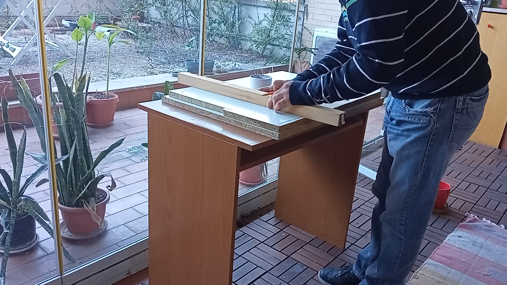
Una volta realizzato il disegno si passa al taglio.
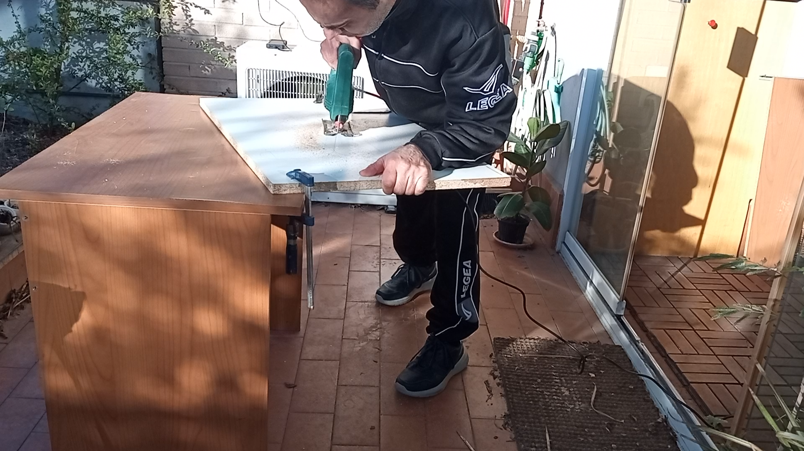
Fatto il primo lato, passiamo al secondo.
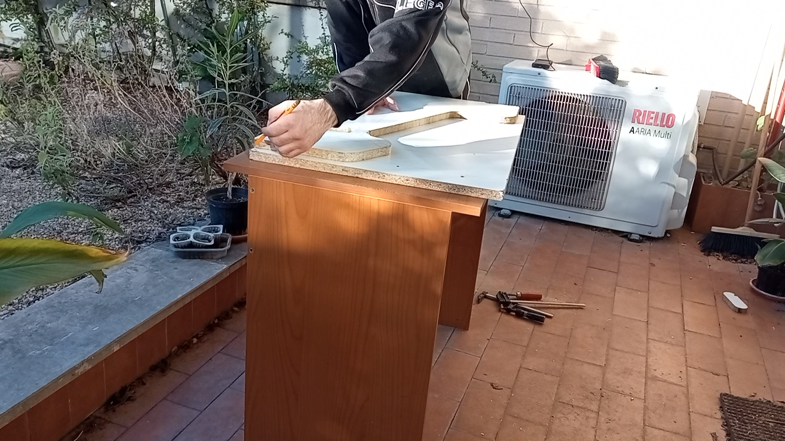
Realizzati i due lati, incolliamo il PVC con l'aiuto del ferro da stiro.
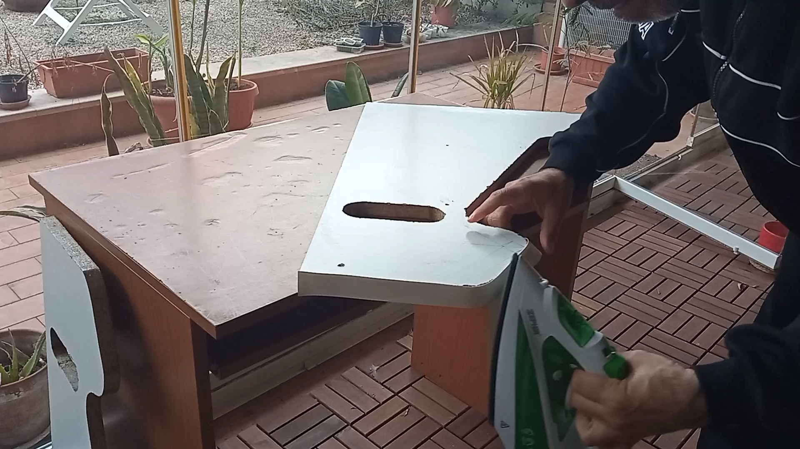
Da questa base creiamo gli altri pezzi in modo da formare un contenitore.
La larghezza dell'arcade, nel mio caso dipendeva dal legno in mio possesso (circa 50 cm di larghezza).
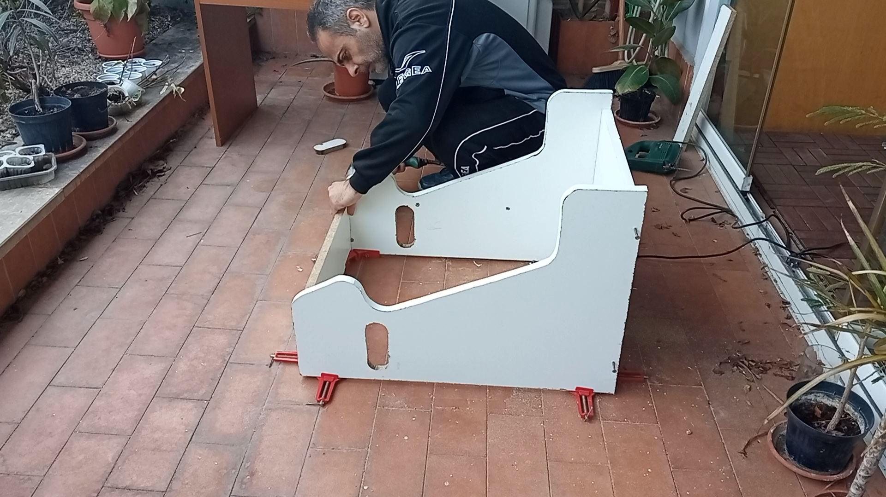
Ora realizziamo i fori che ospiteranno i pulsanti dei joystic.
Per le misure vi dovete riferire al modello del joystic che acquistate.
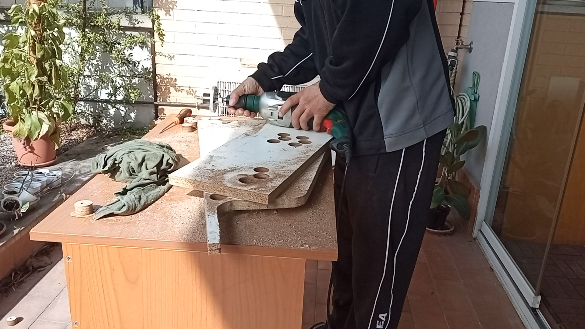
Fate lo stesso per i joystic, in questo caso il foro sarà più grande.
Nel mio caso, avendo un legno da 2 cm di spessore, l'ho dovuto anche scavare con la fresatrice.
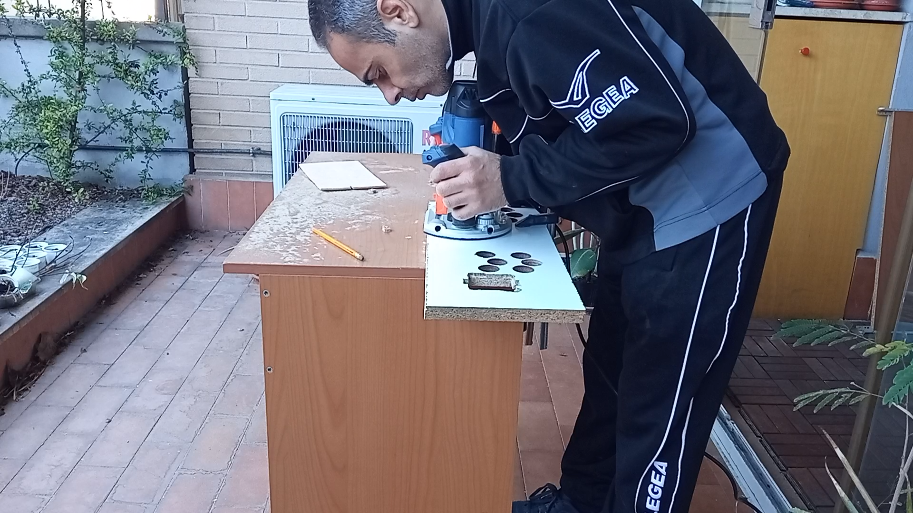
Ora fissiamo il tutto.
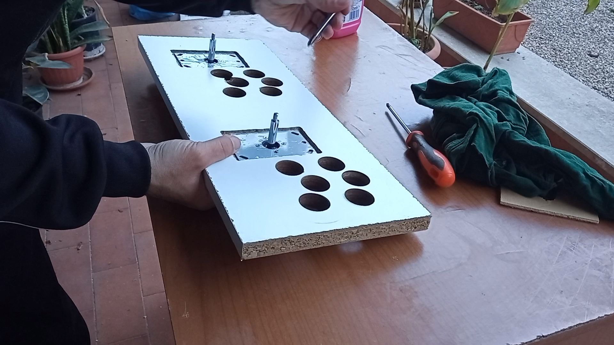
E ricopriamo con un pezzo di compensato il joystic.
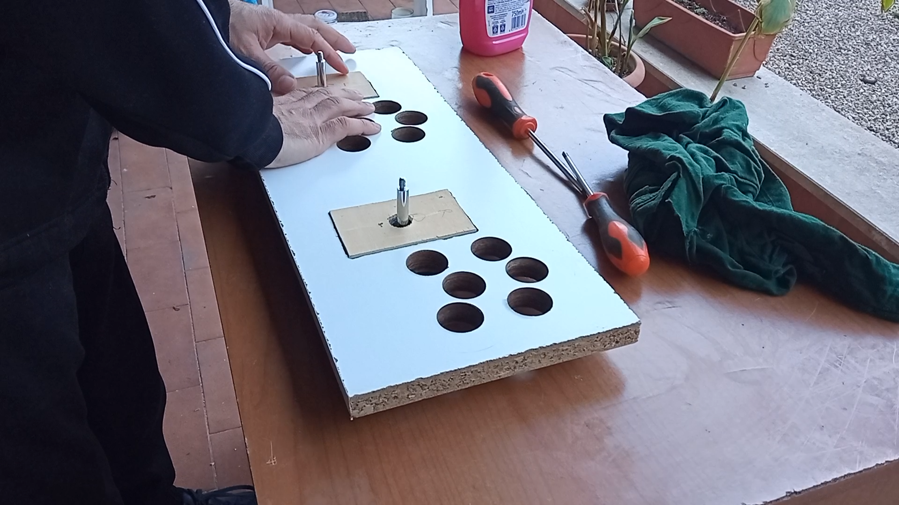
Ricopriamo il tutto con della carta adesiva bianca.

Ricordiamoci di forare anche la base dell'arcade per gli nterruttori SELECT e START.
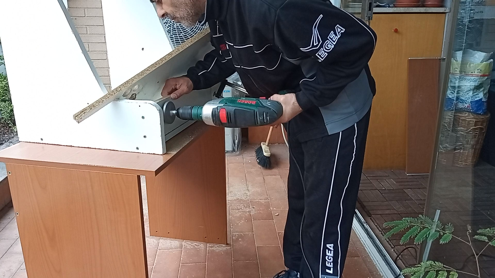
Finiamo di montare il tutto, compreso lo sportello posteriore, realizzato con un compensato da 4mm.
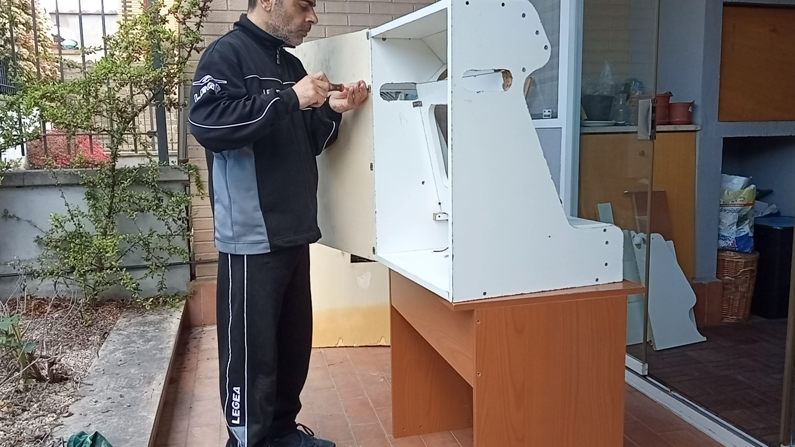
Diamo una verniciata.
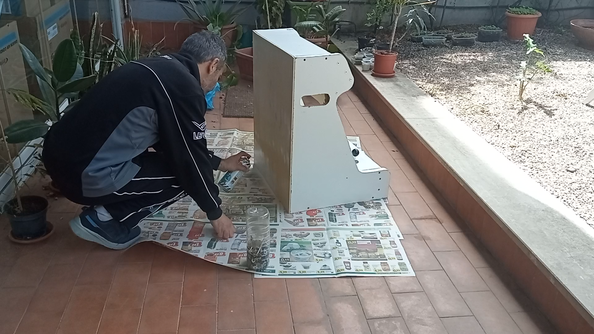
E iniziamo a montare l'elettronica.
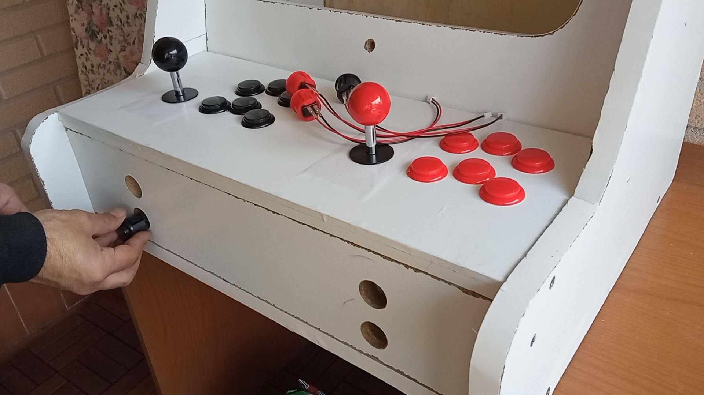
Montiamo gli adattatori dei joystic.
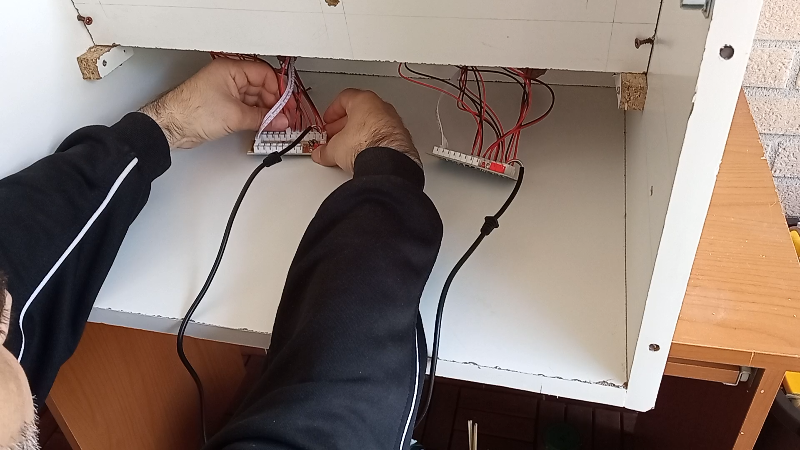
Fissiamo il monitor.

In fine montiamo il vecchio computer e le casse.
Io ho utilizzato un vecchio computer, i progetti che trovate in rete usano una Rasperry PI
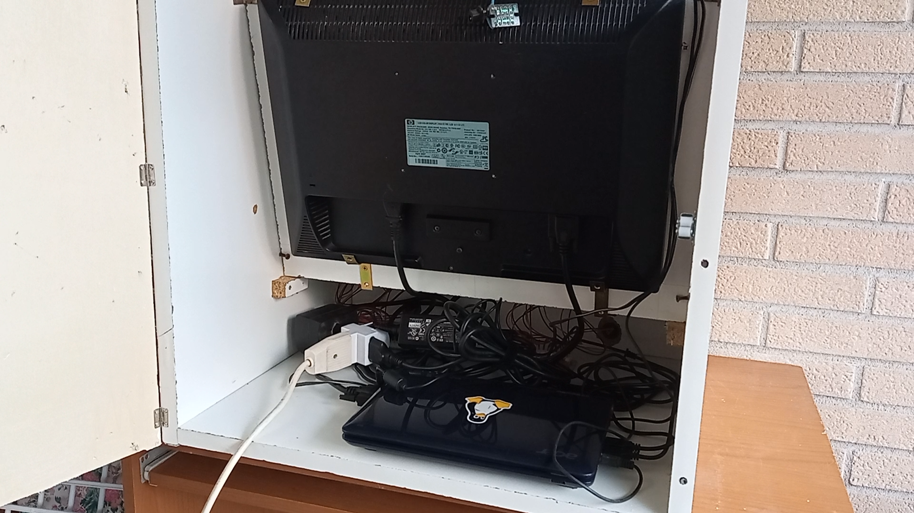
Proteggiamo gli altoparlanti con una retina, io ho tampato in 3D delle grate che poi ho siliconato.
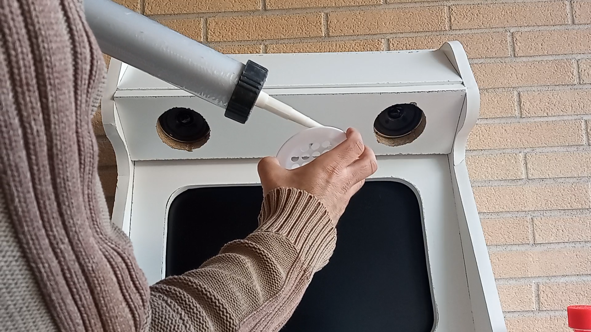
Stesso discorso per le maniglie, io ho stampato dei pezzi con la stampante 3D.
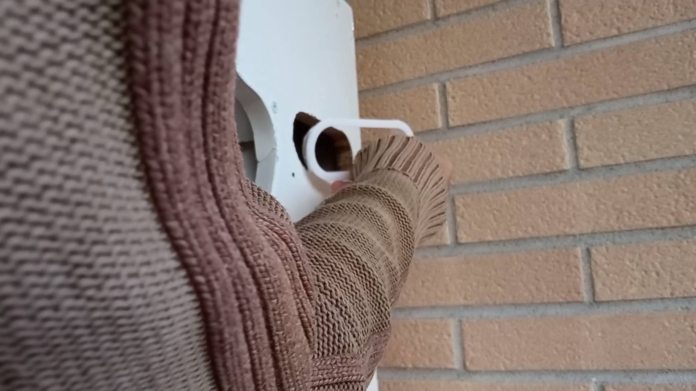
Ora si passa all'installazione di RETROPI all'interno del PC.
In ambiente Linux (Debian o derivate) i comandi sono i seguenti: